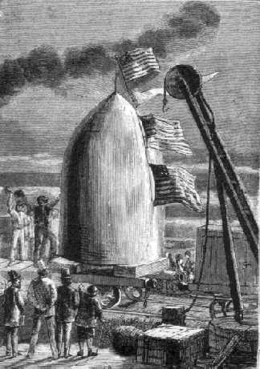

Capítol XXIII
EL VAGÓ - PROJECTIL
Enllestit el famós
Columbiad, l'interès públic va abocar-se immediatament al projectil,
el nou vehicle destinat a transportar a través de l'espai els tres ardits
aventurers. Ningú no havia oblidat que, en el seu telegrama del 30 de
setembre, Miquel Ardan demanava una modificació dels plànols adoptats
pels membres del Comitè.
El president Barbicane havia pensat al principi, i amb raó, que la forma
del projectil no tenia gaire importància, car, un cop travessada l'atmosfera
en pocs segons, el seu recorregut s'efectuaria en el buit absolut. El Comitè
havia adoptat, per tant, la forma rodona, a fi que la bala pogués voltejar
per ella mateixa i comportar-se com li semblés. Però, des de l'instant
que se'l transformava en vehicle, era tota una altra cosa. Miquel Ardan no volia
viatjar a l'estil dels esquirols. Ell volia pujar amb el cap a dalt i els peus
a baix, i això amb tanta dignitat que ni que fos en la cistella d'un
globus. Sens dubte, més de pressa, però tampoc sense lliurar-se
a un seguit de cabrioles poc convenients.

Arribada del projectil a Stone's-Hill
Altres nous plànols foren enviats a la casa Breadwill & C°.,
d'Albany, amb recomanació d'executar-los sense retard. El projectil,
així modificat, fou fos el 2 de novembre i expedit immediatament a Stone's-Hill
pels ferrocarrils de l'Est. El 10 arribà sense cap accident al lloc del
seu destí. Miquel Ardan, Barbicane i Nicholl esperaven amb la més
viva impaciència "aquell vagó-projectil" en el qual
havien de prendre passatge per volar cap a la descoberta d'un nou món.
No cal dir que es tractava d'una magnífica peça de metall, un
producte metal·lúrgic que feia el més gran honor al geni
industrial dels americans. Per primera vegada s'aconseguia l'alumini en una
massa tan important, que amb justesa podia considerar-se com un resultat prodigiós.
El preciós projectil guspirejava als raigs del Sol. En contemplar-lo
amb les seves formes imposants i amb la seva punta cònica, hom l'hauria
pres per una d'aquelles massisses torrelles a manera de garites que els arquitectes
medievals deixaven suspeses a l'angle dels castells que eren fortaleses. Només
li mancaven espitlleres i un penell.
-Estic esperant - exclamà Miquel Ardan - que surti d'aquí dins
un home amb totes les seves armes i duent l'arcabús i el plastró
d'acer. Estarem allí dins com uns senyors feudals, i amb un xic d'artilleria
mantindríem a ratlla tots els exèrcits selenites, si és
que encara n'hi ha a la Lluna!
-Així t'agrada el vehicle? - preguntà Barbicane al seu amic.
-Sí, sí, força que m'agrada! - respongué Miquel
Ardan, que l'examinava com a artista -. Em dol, només, que les seves
formes no siguin més airoses, el seu con més graciós. Haurien
hagut de fer-lo acabar per una tofa d'ornaments de metall tornejat, amb una
quimera, per exemple, una gàrgola, una salamandra amb les ales desplegades
i eixint-li foc amb la gola oberta...
-A què treu nas tot això? - digué Barbicane, que, donat
el seu esperit positiu, era poc sensible a les belleses de l'art.
-A què treu nas, amic Barbicane! Ai, pobre de mi! Em temo molt que pel
sol fet de demanar-m'ho tu no ho podràs comprendre mai!
-Digues, digues, estimat company.
-Doncs bé, segons jo, s'ha de posar sempre un poc d'art en tot allò
que es faci, car així és millor. ¿Coneixes una comèdia
índia que se'n diu El carret del nen?
-Ni tan sols el nom - respongué Barbicane.
-Ja m'ho pensava - reprengué Miquel Ardan -. Sàpigues, doncs,
que en aquesta comèdia hi ha un lladre que, al moment de fer un forat
a la paret d'una casa, es pregunta si farà que el forat tingui la forma
d'una lira, una flor, un ocell o una àmfora. Doncs bé, amic Barbicane,
si en aquell temps tu haguessis estat membre del jurat, hauries condemnat aquell
lladre?
-Sense pensar-m'hi gens - respongué el president del Gun-Club -, i amb
la circumstància agreujant de fractura.
-Doncs jo l'hauria absolt, amic Barbicane! Ací tens per què tu
no podràs mai comprendre'm!
-Ni ho intentaré mai, valent artista!
-Però almenys - reprengué Miquel Ardan -, ja que l'exterior del
nostre vagó-projectil deixa tant a desitjar, se'm permetrà de
moblar-lo al meu gust i amb tot el luxe que convé a uns ambaixadors de
la Terra!
-Referent a aquest punt, estimat Miquel - respongué Barbicane -, faràs
com et dicti la teva fantasia i nosaltres et deixarem fer a gust teu.
Però abans de passar a l'aspecte agradable, el president del Gun-Club
havia pensat en el que era útil, i els mitjans inventats per ell per
esmorteir els efectes del contracop foren aplicats amb una intel·ligència
perfecta.
Barbicane s'havia dit, i no sense raó, que cap ressort no seria prou
poderós per a esmorteir el xoc, i durant la seva famosa anada al bosc
de Skersnaw havia acabat per resoldre aquesta grossa dificultat d'una manera
molt enginyosa. Era amb l'aigua que comptava demanar-li aquest assenyalat servei,
i heus ací de quina manera.
El projectil s'ompliria d'aigua fins a l'alçada de tres peus1.
Aquesta capa d'aigua estava destinada a suportar un disc de fusta perfectament
ajustat, que lliscaria tocant les parets interiors del projectil. Damunt d'aquella
plataforma flotant, vertader rai, hi prendrien lloc els viatgers. Quant a la
massa líquida, estaria distribuïda per uns envans horitzontals que
al moment de partir el projectil el xoc havia de rompre successivament. Llavors,
cada capa d'aigua, des de la més baixa fins a la més alta, escapant-se
pels tubs de desguàs cap a la part superior del projectil, arribaria
d'aquesta manera a fer de ressort, mentre que el disc, estant proveït de
topalls extremament potents, no deixaria que anés a topar amb el fons
sinó fins després de la destrucció successiva dels diferents
envans. Certament, els viatges experimentarien encara un violent contracop després
d'haver-se buidat tota la massa liquida, però el primer xoc restaria
enterament esmorteït mercès a aquell ressort d'una tan gran potència.
És veritat que tres peus d'aigua sobre una superfície de cinquanta-quatre
peus quadrats havien de pesar prop d'onze mil cinc-centes lliures2;
però, segons Barbicane, la detenció dels gasos acumulats en el
Columbiad seria suficient per a vèncer aquest nou augment de pes. A més,
el xoc expel·liria tota aquella aigua en menys d'un segon, amb la qual
cosa el projectil reprendria tot seguit el seu pes normal.
Heus aquí què havia pensat el president del Gun-Club i de quina
manera resoldria el greu problema del contracop. D'altra banda, aquell treball
intel·ligentment comprès pels enginyers de la casa Breadwill fou
meravellosament executat. Un cop produït l'efecte i expel·lida a
fora l'aigua, els viatgers podrien alliberar-se fàcilment dels envans
romputs i desmuntar el disc mòbil que els aguantava des d'abans de la
sortida.
Pel que es refereix a les parets superiors del projectil, estaven millor revestides
d'un gruixut encoixinat de cuiro, aplicat sobre espirals del millor acer, que
tenien la flexibilitat dels ressorts d'un rellotge. Els tubs d'escapada dissimulats
dessota l'encoixinat feien que ningú no en sospités l'existència.
Així, doncs, estaven preses totes les precaucions imaginables per a esmorteir
el primer xoc i per a no deixar-se esclafar, car altrament, segons el dir de
Miquel Ardan, haurien hagut d'ésser "ben poqueta cosa".
El projectil amidava exteriorment nou peus d'ample per quinze d'alçada3.
A fi de no excedir el pes assenyalat s'havia reduït un poc el gruix de
les seves parets i reforçat, en canvi, la part inferior, que era la que
havia de suportar tota la violència dels gasos alliberats per la deflagració
del piroxil. I és així tanmateix en les bombes i en els obusos
cilindrocònics, en els quals el fons sempre és més gruixut.
S'entrava a l'interior d'aquella torre de metall per una estreta obertura practicada
en les parets del con, semblant a aquests registres de les calderes de vapor.
Es tancava hermèticament per mitjà d'una placa d'alumini, retinguda
a l'interior per poderosos cargols a pressió. Els viatgers podrien sortir
voluntàriament de llur presó mòbil així que haguessin
arribat a l'astre de les nits.
Però no n'hi havia prou d'anar-hi; calia veure-hi pel camí. No
hi hagué cosa més fàcil. Dessota l'encoixinat hi havia
quatre lluernes de vidre lenticular molt gruixut; dues d'elles, perforades a
la paret circular del projectil, la tercera en la seva part inferior i la quarta
lluerna a la punta del con. D'aquesta manera els viatgers podrien àdhuc
observar, durant el seu recorregut, la Terra que abandonaven, la Lluna, a la
qual s'apropaven, i els espais sembrats d'estels. Només que aquelles
lluernes estaven protegides contra els xocs de la sortida per unes plaques sòlidament
encastades i que era fàcil de fer caure enfora descargolant les femelles
de l'interior. Així, l'aire contingut en el projectil no podia escapar-se
i les observacions esdevenien possibles.
Tots aquests mecanismes, admirablement instal·lats, funcionaven amb la
més gran facilitat i els enginyers no s'havien mostrat pas menys intel·ligents
en els altres arranjaments del vagó-projectil.
Uns dipòsits sòlidament ajustats estaven destinats a contenir
l'aigua i els queviures necessaris per als viatgers. Podien àdhuc procurar-se
foc i llum per mitjà del gas emmagatzemat en un recipient especial i
sota una pressió de diverses atmosferes. N'hi havia prou de donar una
volta a l'aixeta, i durant sis dies aquest gas havia d'il·luminar i escalfar
aquest confortable vehicle. Com es pot veure, no hi mancaven aquelles coses
essencials de la vida i àdhuc del benestar. A més, gràcies
al bon gust de Miquel Ardan, el que era agradable vingué a ajuntar-se
amb el que era útil sota la forma d'objectes d'art. Si hagués
disposat de més espai, hauria convertit el seu projectil en un veritable
estudi d'artista. D'altra banda, hom s'enganyaria si suposava que aquelles tres
persones havien de trobar-se encongides dins d'aquesta torre de metall. Tenia
una superfície de cinquanta-quatre peus quadrats poc més o menys4
per 10 peus d'alçada5, cosa que permetia als seus
estadants una certa llibertat de moviments. No s'haurien pas trobat millor en
el més confortable vagó dels Estats Units.
Un cop resoltes les qüestions dels queviures i la de la il·luminació,
restava la de l'aire. Era evident que l'aire reclòs en el projectil no
bastaria per als quatre dies per a la respiració dels viatgers. En efecte,
cada home consumeix en una hora tot l'oxigen contingut en cent litres d'aire.
Barbicane i els seus dos companyons, i dos gossos que pensaven dur-se'n devien
consumir, en vint-i-quatre hores, dos mil quatre-cents litres d'oxigen, o, dit
això en pes, vora set lliures. Era convenient, doncs, renovar l'aire
del projectil. De quina manera? Per un procediment ben senzill, emprat per Reiset
i Regnault, i que ja va indicar Miquel Ardan durant el míting.
És sabut que l'aire està compost principalment de vint-i-una parts
d'oxigen i setanta-nou parts de nitrogen o azot. Ara bé, què succeeix
en respirar? Un fenomen molt senzill: l'home absorbeix l'oxigen de l'aire, eminentment
propi per a conservar la vida, i expel·leix el nitrogen intacte. L'aire
expirat ha perdut prop d'un cinc per cent del seu oxigen i conté llavors
un volum gairebé igual d'àcid carbònic, producte definitiu
de la combustió dels elements de la sang per l'oxigen inspirat. S'esdevé,
per tant, que en un ambient clos i al cap d'un cert temps, tot l'oxigen de l'aire
s'ha transformat en àcid carbònic, un gas essencialment danyós.
La cosa es reduïa al següent: Havent-se conservat intacte el nitrogen:
1.r: refer l'oxigen absorbit; 2.n: destruir l'àcid carbònic expulsat.
Res més senzill gràcies al clorat de potassa i a la potassa càustica.
El clorat de potassa és una sal que es presenta en forma de palletes
blanques. Posat a una temperatura superior a quatre-cents graus, es transforma
en clorur potàssic, i l'oxigen que conté es desprèn del
tot. Així, divuit lliures de clorat de potassa corresponen a set lliures
d'oxigen, o sigui la quantitat necessària als viatgers durant vint-i-quatre
hores. Heus aquí el procediment per a refer l'oxigen.
Quant a la potassa càustica, és una matèria molt àvida
de l'àcid carbònic mesclat amb l'aire, i n'hi ha ben bé
prou amb remoure'l perquè se n'apoderi i formi el bicarbonat de potassa.
I heus aquí com s'absorbeix l'àcid carbònic.
Amb la combinació d'aquests dos mitjans, hom té la certesa de
retornar a l'aire viciat totes les seves qualitats vivificants. Això
és el que els químics senyors Reiset i Regnault havien experimentat
amb èxit. Però, convé dir-ho també, l'experiment
només havia tingut lloc fins aleshores "in anima vili". Per
molta que fos la seva precisió científica, s'ignorava en absolut
com la suportarien els homes.
Aquesta fou l'observació que hom féu en la sessió que va
tractar d'aquest important aspecte. Miquel Ardan no volia posar en dubte la
possibilitat de viure per mitjà d'aquest aire fictici, i va oferir-se
de fer un assaig abans de sortir. Però l'honor d'intentar aquesta prova
fou reclamada enèrgicament per J.-T. Maston.
-Ja que jo no hi vaig - digué aquest brau artiller -, el menys que podeu
fer és deixar-me viure dins el projectil durant vuit dies.
Hauria estat una duresa de cor refusar-li-ho. S'accedí al seu desig.
Una quantitat suficient de clorat de potassa i de potassa càustica fou
posada a la seva disposició, així com queviures per a vuit dies.
Després, estrenyent la mà dels seus amics, el 12 de novembre,
a les sis del matí, i sense deixar abans de recomanar molt expressament
que no obrissin per res la seva presó fins el dia 20, a les sis del matí,
s'esmunyí dins el projectil i la placa fou hermèticament tancada.
Què succeí durant aquella vuitena? Impossible de saber-ho. Les
gruixudes parets del projectil privaven que tota remor de l'interior arribés
al defora.
El 20 de novembre, a les sis en punt, la placa fou aixecada. Els amics de J.-T.
Maston no deixaven, amb tot, d'estar un xic inquiets. Però es tranquil·litzaren
aviat en sentir una veu joiosa que llançava un hurra formidable.
Tot seguit, el secretari del Gun-Club aparegué al cim del con en una
actitud triomfant. S'havia engreixat!
1. Uns 0,90 metres.
2. 5.216 quilos.
3. Metres 2,75 per 4,55.
4. 5 metres quadrats.
5. 3,05 metres.